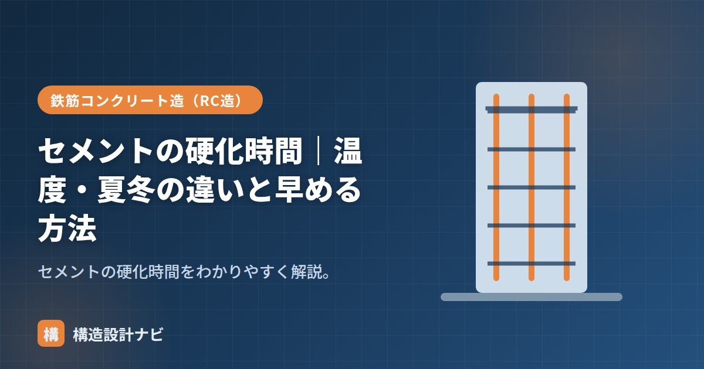

セメントの硬化時間｜温度・夏冬の違いと早める方法

セメントの硬化時間とは、セメント（コンクリート）が水と反応して固まり、強度を発現していくまでの時間のことです。固まる速さは温度で大きく変わり、夏と冬では施工上の注意点もまったく異なります。この記事では、凝結・硬化という2段階のしくみ、温度の影響、夏冬の違い、硬化を早める方法を整理します。
- 固まる過程は「凝結（始発・終結）」と「硬化（強度発現）」の2段階。
- 水和反応は温度が高いほど速く、低いほど遅い。夏は急結、冬は遅延・凍害に注意。
- 早強セメント・促進剤・加温養生・低W/Cで硬化を早められる。
凝結と硬化
固まる過程は2段階で考えます。
| 段階 | 内容 |
|---|---|
| 凝結（ぎょうけつ） | 練ったコンクリートが流動性を失い固まり始める。始発（固まり始め）と終結（固まり終わり）で表す |
| 硬化（こうか） | その後、時間をかけて強度が増していく。材齢28日を強度の基準とする |
普通ポルトランドセメントの凝結は、JISで始発60分以上・終結10時間以下と規定されています（常温の目安）。始発が早すぎると運搬・打込みの時間が確保できず、終結が遅すぎると工程が進められないため、両側から範囲が定められているわけです。
注意したいのは、凝結が終わっても強度はまだほとんど出ていないことです。強度は硬化の進行とともに増加し、標準的な養生では材齢28日の圧縮強度を品質管理の基準とします。「固まった＝強度が出た」ではない、というのが実務での重要な感覚です。
温度の影響
セメントの水和反応は化学反応なので、温度が高いほど速く、低いほど遅く進みます。気温が下がると凝結・強度発現は遅くなり、上がると速くなります。
夏と冬の違い
| 夏（高温） | 冬（低温） | |
|---|---|---|
| 凝結・硬化 | 速い | 遅い |
| 注意点 | コールドジョイント・急乾燥 | 型枠期間が長い・初期凍害 |
夏は早く固まりすぎて打ち継ぎ不良が起きやすく（→暑中コンクリート）、冬は固まりが遅く凍結の危険があります（→寒中コンクリート）。このため、練混ぜから打込み終了までの時間の限度や、型枠の存置期間は、外気温に応じて定められています。工程計画の段階から季節を織り込んでおくことが大切です。
「夏は速く固まる＝強度も高くなる」とは限りません。初期の強度発現は速いものの、急激な水和や乾燥により長期強度はかえって伸びにくくなる傾向があります。速く固まることと良く固まることは別、と覚えておきましょう。
硬化を早める方法
- 早強ポルトランドセメントを使う。
- 促進剤（早強剤）などの混和剤を使う。
- 加温・保温養生で温度を確保する。
- 水セメント比を下げる（強度発現が速くなる）。
工期短縮や冬期の型枠早期転用には早強セメントが定番で、普通セメントの材齢7日程度の強度を3日程度で得られるとされます。ただし水和熱が大きいため、部材が厚い場合は温度ひび割れへの配慮が必要です。
よくある質問
Q1. コンクリートは何日で歩けるようになりますか？
気温や配合によりますが、人が乗る程度なら数日、支保工を外して本格的に荷重をかけるには所定の強度確認が必要です。JASS5などで部位ごとの存置期間・強度の基準が定められているため、自己判断ではなく強度試験で確認するのが原則です。
Q2. 雨や水に濡れると固まらなくなりますか？
凝結後のコンクリートにとって水分はむしろ硬化に必要で、湿潤養生は強度発現に有利です。問題なのは打込み直後の表面が雨で洗われることや、練混ぜ水が意図せず増えることで、これらは品質低下の原因になります。
型枠の存置期間は、日数だけでなく積算温度（マチュリティ）の考え方で管理するよう現場に伝えています。「夏だから固まりが早いはず」と規定日数より前倒しで外そうとする施工者もいますが、強度試験の結果が出るまでは安易に判断しないよう毎回念押しするようにしています。
まとめ
- 固まる過程は凝結（始発・終結）と硬化。普通は始発60分以上・終結10時間以下が目安。
- 凝結しても強度はまだ低い。強度の基準は材齢28日。
- 温度が高いほど速く固まり、低いほど遅い。夏は急結、冬は遅延・凍害に注意。
- 早強セメント・促進剤・加温養生・低W/Cで硬化を早められる。